About us
Teams
| Team A | Team B | Team C | Team D |
|---|---|---|---|
| Manesh | Virginia | Aleks | Kurts |
| Christian | Alexandru | Dragana | Munir |
| Gala | Emir | Apostolis | Celia |
| Milena | Darko |
Activity
public class MainActivity extends Activity {
@Override
protected void onCreate(Bundle savedInstanceState) {
super.onCreate(savedInstanceState);
setContentView(R.layout.activity_main);
}
} 
Intent
Intent intent = new Intent(Activity_starting_other_activity, ActivityToBeStarted.class);
startActivity(Intent intent);
startActivityForResult(Intent intent, int requestCode);
@Override
protected void onActivityResult(int requestCode, int resultCode, Intent intent){
if(resultCode != RESULT_OK) {
finish(); //ends activity
} else {
// do something with the information retrieved
}
}
Logger
debug (Log.d)
info (Log.i)
error (Log.e)
verbose (Log.v)
warn (Log.w)
Project Structure
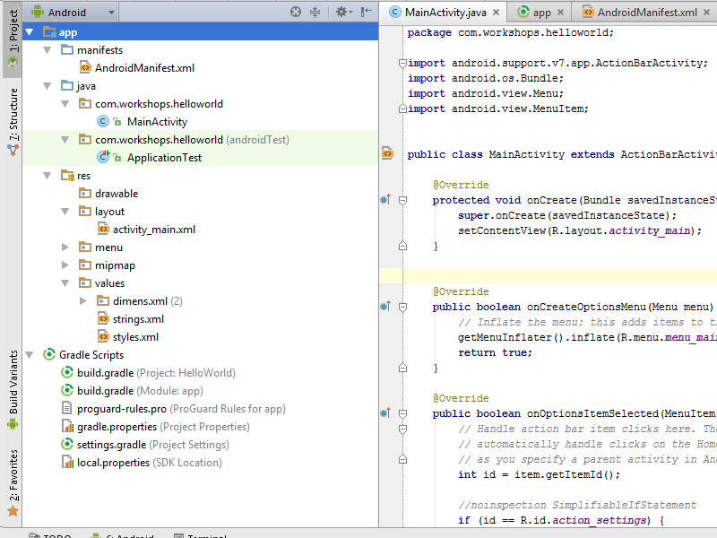Gradle
android {
compileSdkVersion 21
buildToolsVersion "21.1.2"
defaultConfig {
applicationId "com.workshops.helloworld"
minSdkVersion 18
targetSdkVersion 21
versionCode 1
versionName "1.0"
}
...
}
Android Manifest
<?xml version="1.0" encoding="utf-8"?>
<manifest xmlns:android="http://schemas.android.com/apk/res/android"
package="com.workshops.helloworld" >
<uses-permission
android:name="android.permission.SOME_PERMISSION" />
<application
android:allowBackup="true"
android:icon="@mipmap/ic_launcher"
android:labelw="@string/app_name"
android:theme="@style/AppTheme" >
<activity
android:name=".MainActivity"
android:label="@string/app_name" >
<intent-filter>
<action android:name="android.intent.action.MAIN" />
<category android:name="android.intent.category.LAUNCHER" />
</intent-filter>
</activity>
</application>
</manifest>
Hello, world!
Internet of Things ...
... is a network of interconnected things ...
... embedded with electronics and sensors ...
... which enables them to achieve greater value and service ...
... by exchanging and analysing data.
Cisco - pioneer in Internet of Everything
Smart+Connected Cities


Rules

App's structure
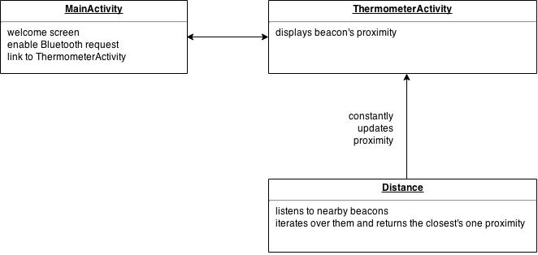Run Android Studio
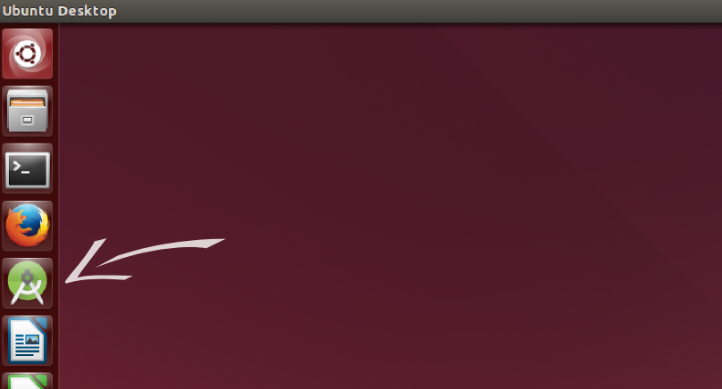Create new Android project
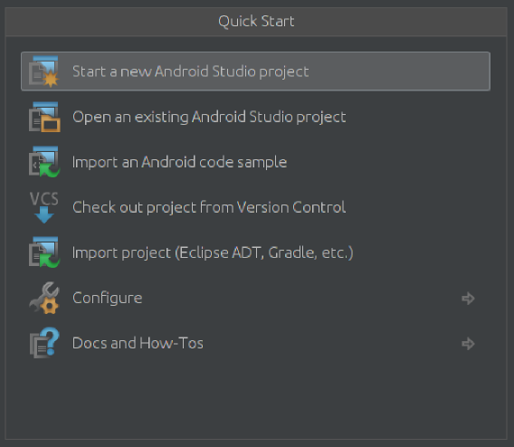Create new Android project

Create new Android project
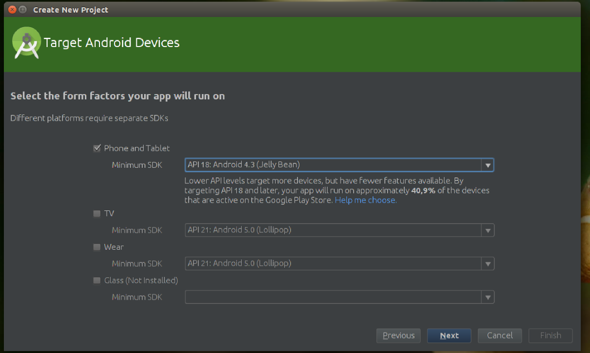We use API 18, because it's the lowest that works with Bluetooth 4.0.
Create new Android project
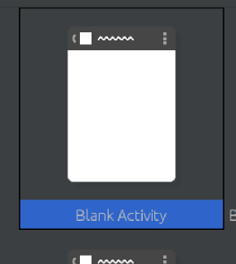 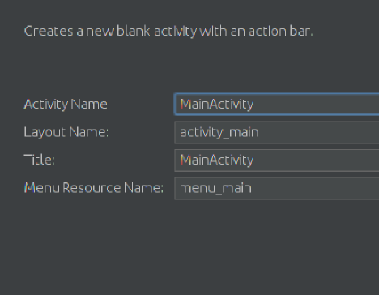Create ThermometerActivity
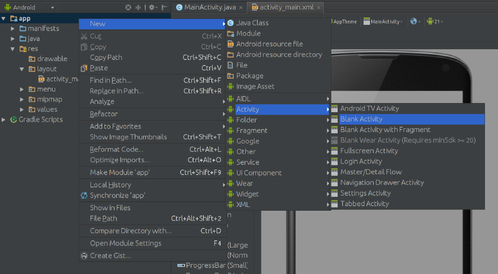Create ThermometerActivity
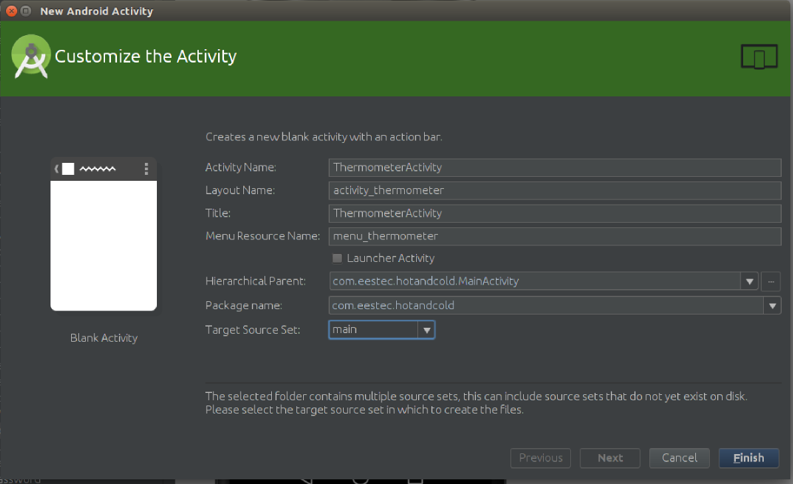Edit AndroidManifest.xml
// Don't type lines with "//" - these are comments!
<manifest xmlns:android="http://schemas.android.com/apk/res/android"
package="com.eestec.hotandcold" >
// Add the permissions on the top
<uses-permission android:name="android.permission.BLUETOOTH" />
<uses-permission android:name="android.permission.BLUETOOTH_ADMIN" />
<uses-feature android:name="android.hardware.bluetooth_le" android:required="true" />
// (...)
</manifest>
Edit AndroidManifest.xml
// MainActivity
// add only screenOrientation - the rest should already be here
<activity
android:name=".MainActivity"
android:label="@string/app_name"
android:screenOrientation="portrait" >
<intent-filter>
// the following lines make our Activity default - it starts when we start the app
<action android:name="android.intent.action.MAIN" />
<category android:name="android.intent.category.LAUNCHER" />
</intent-filter>
</activity>
Edit AndroidManifest.xml
// Thermometer Activity
// add only configChanges and screenOrientation - the rest should already be here
<activity
android:name=".ThermometerActivity"
android:label="@string/title_activity_thermometer"
android:configChanges="orientation|keyboardHidden|screenSize"
android:parentActivityName=".MainActivity"
android:screenOrientation="portrait" >
<meta-data
android:name="android.support.PARENT_ACTIVITY"
android:value="com.eestec.hotandcold.MainActivity" />
</activity>
Enable Bluetooth
// Neccesary imports
import android.bluetooth.BluetoothAdapter;
import android.content.Intent;
// (...) - leave the rest unchanged
public class MainActivity extends ActionBarActivity {
private BluetoothAdapter bluetoothAdapter;
private int REQUEST_ENABLE_BT = 1; // must be greater than 0
public boolean bluetoothNotEnabled(){
return !bluetoothAdapter.isEnabled();
}
public void askForBluetoothAccess(){
Intent enableBluetoothIntent = new Intent(BluetoothAdapter.ACTION_REQUEST_ENABLE);
startActivityForResult(enableBluetoothIntent, REQUEST_ENABLE_BT);
}
// (...) - leave the rest unchanged
}
Enable Bluetooth
// MainActivity's onCreate method - it's already there
// we just change it a little bit
@Override
protected void onCreate(Bundle savedInstanceState) {
super.onCreate(savedInstanceState); // invokes parent's onCreate methon; common practice
setContentView(R.layout.activity_main); // binds xml layout with java class
bluetoothAdapter = BluetoothAdapter.getDefaultAdapter(); // add this...
if(bluetoothNotEnabled()) askForBluetoothAccess(); // ... and this
}
Create a button
In activity_main.xml, drag the "Button" onto the screen. 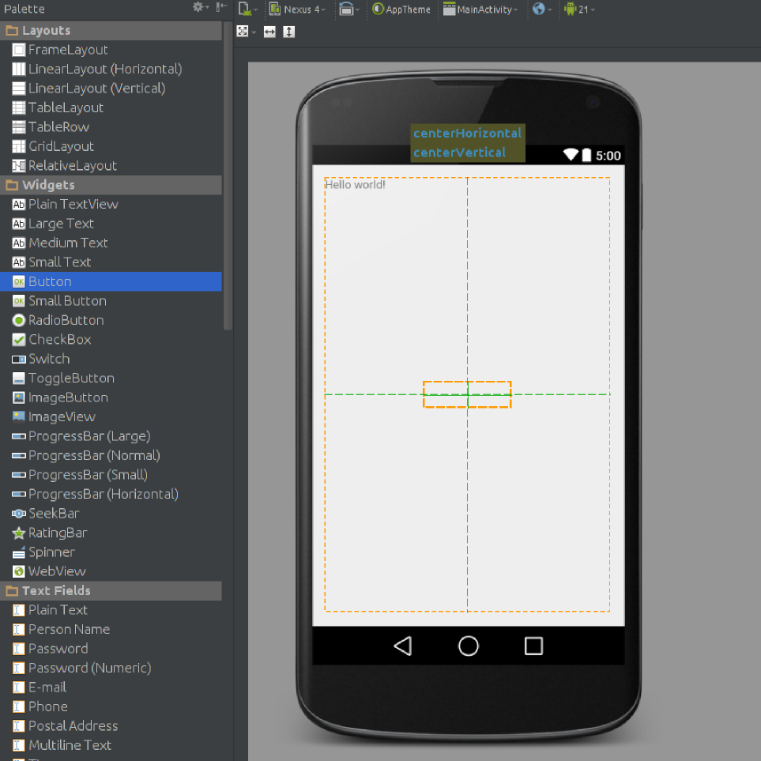Create a button
Change its display text... 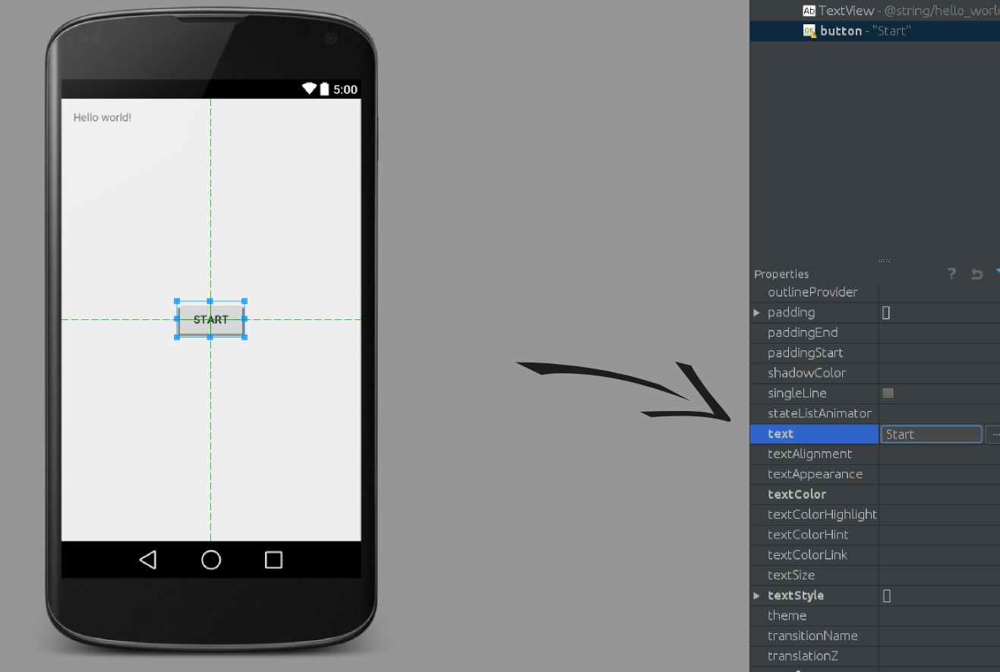Create a button
... and its ID. It'll be its unique identifier in our app. 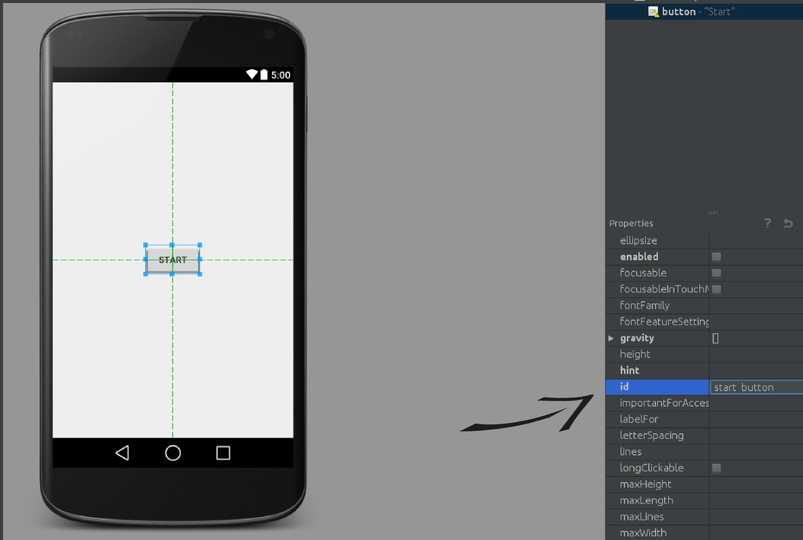Create a button
Now, declare Button and Context objects in MainActivity.java
import android.widget.Button;
import android.content.Context;
// ...
public class MainActivity extends ActionBarActivity {
// declare new Objects, that we'll use in a second
private Button startButton;
private Context context = this;
//(...)
}
Create a button
Keep reference to Button and override onClick().
@Override
protected void onCreate(Bundle savedInstanceState) {
//(...)
startButton = (Button)findViewById(R.id.start_button); // this is CASTING
// findViewById returns unspecified ViewType, we have to CAST it on the one wanted
startButton.setOnClickListener(new View.OnClickListener() {
// here we set new Object to listen to the onClick events
@Override // here we OVERRIDE the existing method
public void onClick(View v) {
Intent thermometerIntent = new Intent(context, ThermometerActivity.class);
startActivity(thermometerIntent);
}
});
}
Make & run
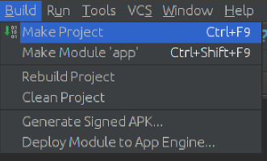 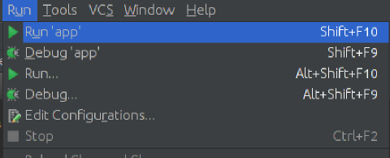You should see an empty activity with a button, which will lead you to second empty activity.
Import Estimote SDK
Go to https://github.com/Estimote/Android-SDKImport Estimote SDK
Navigate to EstimoteSDK
Import Estimote SDK
Click on estimote-sdk-preview.aar 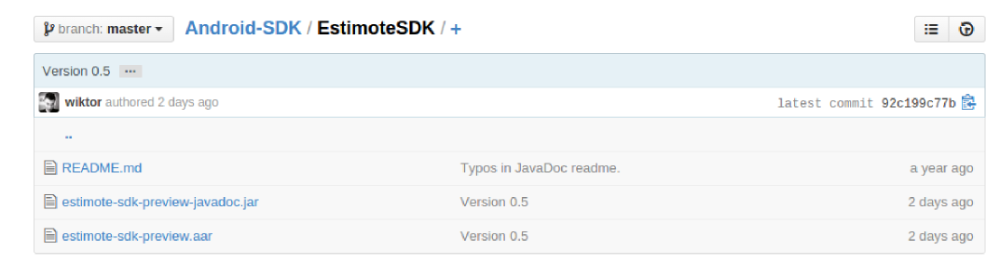Import Estimote SDK
And download its "raw" format 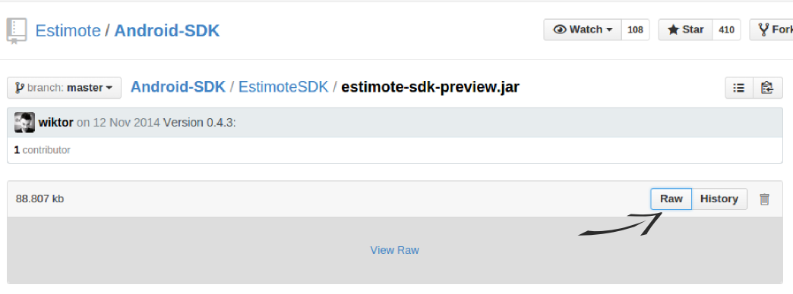Import Estimote SDK
Import Estimote SDK
Turn to Project view
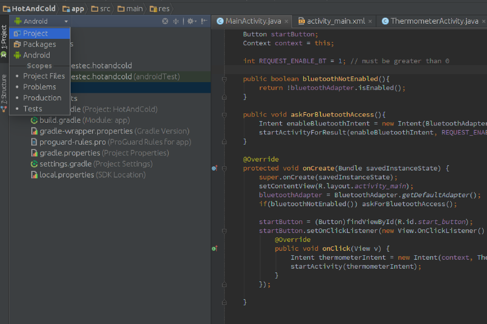Import Estimote SDK
Add it as a library to our project
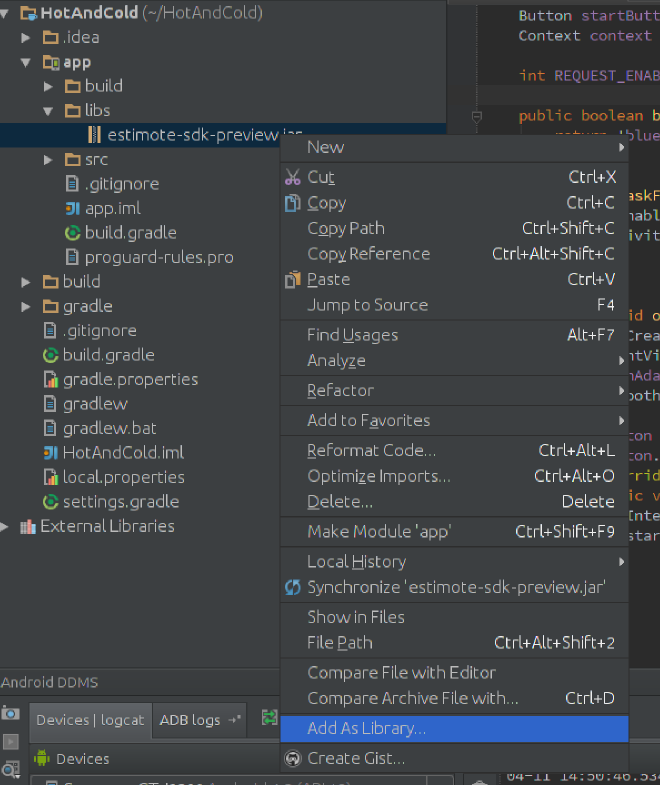Update manifest
In AndroidManifest.xml
<manifest>
<application>
(...)
<service android:name="com.estimote.sdk.service.BeaconService"
android:exported="false"/>
</application>
</manifest>
Create empty Distance class
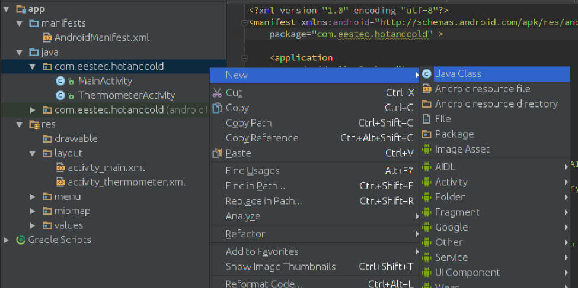Import SDK's objects
package com.eestec.hotandcold;
import com.estimote.sdk.Beacon;
import com.estimote.sdk.BeaconManager;
import com.estimote.sdk.Region;
import com.estimote.sdk.Utils;
public class Distance {
// empty for now
}
Distance class
public class Distance {
// private means that variable cannot be accessed from other Objects
// final means that the variable's value cannot be changed
private final double MAX_BEACON_DISTANCE = 100;
// volatile means that this value will be modified or accessed by different threads
private volatile double distanceToClosestBeacon;
// Constructor
public Distance(){
this.distanceToClosestBeacon = MAX_BEACON_DISTANCE;
}
}
Method calculate()
// New imports, we'll need them in a minute
import android.util.Log;
import java.util.List;
// ...
public class Distance {
// (...)
public void calculate(BeaconManager beaconManager){
// This method will be invoked from Thermometer Activity.
// It'll basically measure the distance to the nearest beacon.
}
}
Method calculate()
public void calculate(BeaconManager beaconManager){
beaconManager.setRangingListener(new BeaconManager.RangingListener() {
// we're inside a new RangingListener object
// here, we can override default behavior on event of discovering beacon
});
}
Method calculate()
public void calculate(BeaconManager beaconManager){
beaconManager.setRangingListener(new BeaconManager.RangingListener() {
@Override
public void onBeaconsDiscovered(Region region, List<Beacon> beacons) {
// here, we can actually operate on Estimote API
// it takes two arguments:
// Region region - Region object, which defines which devices we listen to
// List<Beacon> beacons - list of found beacons
// we'll define the function's body on the next slide
}
});
}
Method calculate()
public void onBeaconsDiscovered(Region region, List<Beacon> beacons) {
Integer major = 0;
Integer minor = 0;
distanceToClosestBeacon = MAX_BEACON_DISTANCE; // resetting closest beacon proximity
for (Beacon rangedBeacon : beacons) {
// Estimote provides us with function to compute distance
// based on signal's strength
Double distanceToThisBeacon = Utils.computeAccuracy(rangedBeacon);
if (distanceToThisBeacon <= distanceToClosestBeacon) {
distanceToClosestBeacon = distanceToThisBeacon;
major = rangedBeacon.getMajor(); // that's how we can get beacon's major ID
minor = rangedBeacon.getMinor(); // and that's how we can get it's minor ID
}
}
Log.d("Closest beacon found: ", Double.toString(distanceToClosestBeacon) + " away");
Log.d("Closest beacon found: ", "Its unique identifier ID is " + major.toString() + " " + minor.toString());
}
Update ThermometerActivity
Create new BeaconManager and new Region
// Moooooooaaarrr imports
import com.estimote.sdk.BeaconManager;
import com.estimote.sdk.Region;
import android.os.RemoteException;
// ...
public class ThermometerActivity extends ActionBarActivity {
private BeaconManager beaconManager; // service responsible for scanning beacons
private static final Region ALL_ESTIMOTE_BEACONS = new Region("regionId", null, null, null);
// we define listening to all beacons
private volatile Distance distance; // instance of our Distance class
// ...
}
Update ThermometerActivity
Create new instance of Distance object and invoke it in onCreate()
@Override
protected void onCreate(Bundle savedInstanceState) {
(...)
beaconManager = new BeaconManager(this);
distance = new Distance();
distance.calculate(beaconManager);
}
Update ThermometerActivity
// in ThermometerActivity class
@Override
protected void onStart() {
super.onStart();
beaconManager.connect(new BeaconManager.ServiceReadyCallback() {
// we implement onServiceReady, because ServiceReadyCallback is an interface
@Override
public void onServiceReady() {
try {
beaconManager.startRanging(ALL_ESTIMOTE_BEACONS);
} catch (RemoteException e) {
Log.e("test", "Cannot start ranging", e);
}
}
});
}
Update ThermometerActivity
// in ThermometerActivity class
@Override
protected void onStop() {
super.onStop();
try {
beaconManager.stopRanging(ALL_ESTIMOTE_BEACONS);
} catch (RemoteException e) {
Log.e("test", "Cannot stop but it does not matter now", e);
}
beaconManager.disconnect();
}
Make and run
If everything is done OK, the distance should be visible in LogCat.Get distance from Distance.java
public class Distance {
// ...
// we define getter so we can get distance from other Objects
public double getDistance(){
return distanceToClosestBeacon;
}
}
}
Edit layout
In activity_thermometer.xml, add new TextView.

Edit layout
Change its ID.
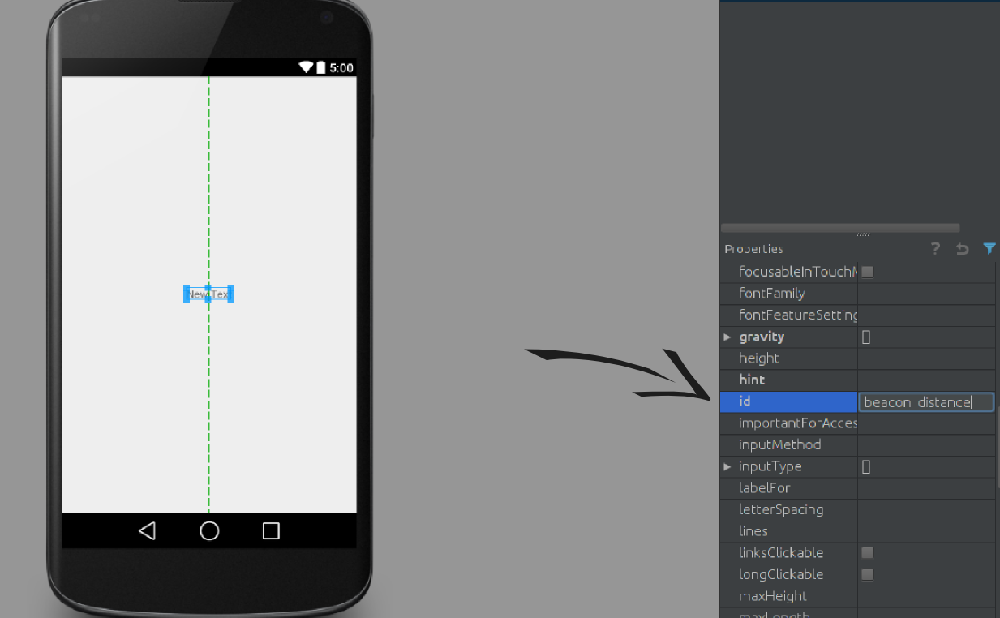Edit ThermometerActivity.java
Declare TextView and distance to show.
import android.widget.TextView;
// ...
public class ThermometerActivity extends ActionBarActivity {
private TextView distanceText; // here we'll set the text for display
private volatile double currentDistance = 0; // here we'll store data from Distance class
private Thread thread; // new thread will allow us to run asynchronously
// ...
}
}
Edit ThermometerActivity.java
Keep reference to TextView.
@Override
protected void onCreate(Bundle savedInstanceState) {
// ...
distanceText = (TextView) findViewById(R.id.beacon_distance);
}
Edit ThermometerActivity.java
Start a new Thread.
@Override
protected void onCreate(Bundle savedInstanceState) {
// ...
thread = new Thread(){
// here, we're inside the new Thread object
@Override
public void run(){
// for the Thread to work properly, we need to override its run() method
}
};
thread.start(); // start it, when the activity is created
}
Edit ThermometerActivity.java
Get distance
@Override
public void run(){
while(???) {
try {
sleep(50);
// currentDistance = ???
// QUEST FOR YOU:
// How can we get distance from Distance Class?
// How can we "average it"?
} catch (InterruptedException e) {
e.printStackTrace(); // log information about error; common practice
}
}
}
Edit ThermometerActivity.java
Get distance
@Override
public void run(){
while(???) {
try {
sleep(50);
// Possible solution:
currentDistance = 0.9*currentDistance + 0.1*distance.getDistance();
} catch (InterruptedException e) {
e.printStackTrace();
}
}
}
Edit ThermometerActivity.java
Format text
// ...
try {
// ...
String text;
// ANOTHER EXCITING QUEST :D
// format the distance appropriately
// e.g. when currentDistance = 1.2, set text to 1.2 meters
// and when currentDistance = 0.8, set text to 80 centimeters
}
// ...
Edit ThermometerActivity.java
Format text
// ...
try {
// ...
String text;
// format the distance appropriately
if (currentDistance >= 1.0){
text = String.format("%.2f", currentDistance) + " m";
} else {
text = String.format("%.2f", 100*currentDistance) + " cm";
}
}
// ...
Edit ThermometerActivity.java
Post it to update UI
// ...
try {
//...
final String finalText = text; // String passed to another thread has to be final
// we cannot change UI directly from another thread
// we have to communicate with main thread by post() method
distanceText.post(new Runnable() {
public void run() {
distanceText.setText(finalText); // here we change the TextView
}
});
}
// ...
But what about the while loop?
@Override
public void run(){
while(???) { // wtf is this "???"
// we need a clever boolean, so our background Thread won't change UI forever
}
}
public class ThermometerActivity extends ActionBarActivity {
// ...
private volatile boolean showProximity = true;
@Override
protected void onCreate(Bundle savedInstanceState) {
(...)
thread = new Thread(){
@Override
public void run(){
while(showProximity) {
// ...
}
}
}
@Override
protected void onStop() {
// ...
showProximity = false;
}
}
Make and run
It should work!
Thermometer layout
Drag the TextView to the bottom, to make space for the bar. 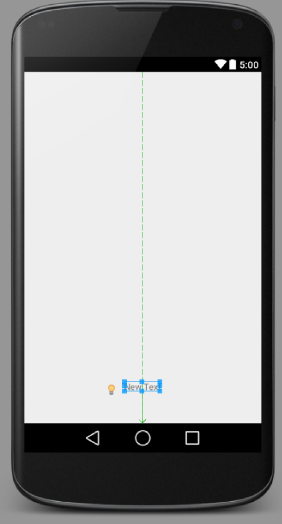Thermometer layout
Only for pr0s: 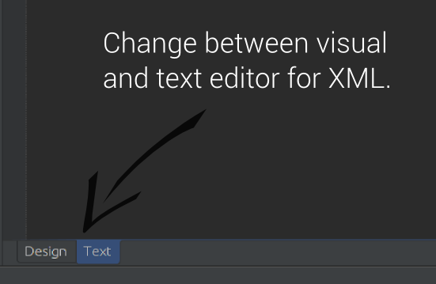ProgressBar layout
Now, in Text edit mode, type the code below:
<ProgressBar
android:id="@+id/thermometer"
android:layout_width="30dip" <!-- dip = density independent pixels -->
android:layout_height="300dip"
style="@style/Widget.ProgressBar.Vertical" <!-- undefined, yeah... in a minute :) -->
android:indeterminate="false" <!-- that means, that our bar will be "finite" -->
android:layout_alignParentTop="true" <!-- stick it to the top of Parent -->
android:layout_centerHorizontal="true" <!-- center it -->
android:layout_marginTop="62dp" <!-- give it some margin -->
/>
Style our ProgressBar
In file res/values/styles.xml add following lines:
<style name="Widget">
</style>
<style name="Widget.ProgressBar">
<item name="android:indeterminateOnly">true</item>
<item name="android:indeterminateBehavior">repeat</item>
<item name="android:indeterminateDuration">3500</item>
<item name="android:minWidth">48dip</item>
<item name="android:maxWidth">48dip</item>
<item name="android:minHeight">48dip</item>
<item name="android:maxHeight">48dip</item>
</style>
Style our ProgressBar
In file res/values/styles.xml add following lines:
<style name="Widget.ProgressBar.Vertical">
<item name="android:indeterminateOnly">false</item>
<item name="android:progressDrawable">@drawable/progress_bar_vertical</item>
<!-- YES, WE KNOW IT'S UNDEFINED -->
<item name="android:indeterminateDrawable">@android:drawable/progress_indeterminate_horizontal</item>
<item name="android:minWidth">1dip</item>
<item name="android:maxWidth">12dip</item>
</style>
Style the thermometer
Create file res/drawable/progress_bar_vertical.xml and fill it with us:
<?xml version="1.0" encoding="utf-8"?>
<layer-list xmlns:android="http://schemas.android.com/apk/res/android">
// here we'll be creating two items
</layer-list>
Style the thermometer
Create file res/drawable/progress_bar_vertical.xml and fill it with us:
<item android:id="@android:id/background">
<shape>
<corners android:radius="5dip" />
<gradient
android:startColor="#ff9d9e9d"
android:centerColor="#ff5a5d5a"
android:centerY="0.75"
android:endColor="#ff747674"
android:angle="180"
/>
</shape>
</item>
Style the thermometer
Create file res/drawable/progress_bar_vertical.xml and fill it with us:
<item android:id="@android:id/progress">
<clip android:clipOrientation="vertical" android:gravity="bottom">
<shape>
<corners android:radius="5dip" />
<gradient
android:startColor="@color/cold" <!-- undefined -->
android:centerColor="@color/warm" <!-- undefined, too -->
android:centerY="0.75"
android:endColor="@color/hot" <!-- undefined, as well -->
android:angle="90"
/>
</shape>
</clip>
</item>
Add some colours
Create file res/values/colors.xml and fill it with:
<resources>
<color name="cold">#ff0969A2</color>
<color name="warm">#ffff4f00</color>
<color name="hot">#ffff2300</color>
</resources>
Now it's time to control the bar's progress from Java.
import android.widget.ProgressBar;
// ...
private ProgressBar progress;
@Override
protected void onCreate(Bundle savedInstanceState) {
// ...
progress = (ProgressBar) findViewById(R.id.thermometer);
progress.setMax(100);
// ...
}
// in Thread's run() method
@Override
public void run(){
// ...
double currentProgress; // this will control the bar's progress
double progressStatus; // helper variable
}
// inside while & try
@Override
public void run(){
// ...
while(showProximity) {
try {
// ...
progressStatus = progress.getMax() - distance.getDistance();
currentProgress = progress.getProgress();
currentProgress = Math.ceil(0.9 * currentProgress + 0.1 * progressStatus);
progress.setProgress((int)currentProgress);
}
}
Import image to MainActivity
Go to https://github.com/adamnie/HotandColdHere, you can find the whole code of our app.
Place it in res/drawable in our project.
Add title
Gradient color for &
In MainActivity.java:
// import Shader and LinearGradient
public void setGradientText(TextView amp){
Shader textShader = new LinearGradient(0, 0, 0, amp.getPaint().getTextSize(),
new int[]{rgb(230, 92, 48), rgb(40, 140, 203)},
new float[]{0, 1}, Shader.TileMode.CLAMP);
amp.getPaint().setShader(textShader);
}
// invoke it in onCreate on our TextView
@Override
protected void onCreate(Bundle savedInstanceState) {
// ...
TextView amp = (TextView)findViewById(R.id.title_amp);
setGradientText(amp);
}
Add picture to main activity
Style the button
Style the button
<?xml version="1.0" encoding="utf-8"?>
<selector xmlns:android="http://schemas.android.com/apk/res/android">
// here we'll create two items
</selector>
Style the button
// ...
<item android:state_pressed="true" >
<shape>
<gradient
android:startColor="@color/button_cool"
android:endColor="@color/button_cold"
android:angle="270" />
<stroke
android:width="1dp"
android:color="@color/button_cold" />
<corners
android:radius="3dp" />
<padding
android:left="10dp"
android:top="10dp"
android:right="10dp"
android:bottom="10dp" />
</shape>
</item>
// ...
Style the button
// ...
<item>
<shape>
<gradient
android:startColor="@color/button_warm"
android:endColor="@color/button_hot"
android:angle="270" />
<stroke
android:width="1dp"
android:color="@color/button_hot" />
<corners
android:radius="3dp" />
<padding
android:left="10dp"
android:top="10dp"
android:right="10dp"
android:bottom="10dp" />
</shape>
</item>
// ...
Add colors to colors.xml
// ...
<color name="button_hot">#FFE62025</color>
<color name="button_warm">#FFFECB68</color>
<color name="button_cool">#FF63A3D8</color>
<color name="button_cold">#FF0059A7</color>
Style the title's and button's text
Shutdown if user doesn't enable bluetooth
In MainActivity.java:
@Override
protected void onActivityResult(int requestCode, int resultCode, Intent intent){
if(requestCode != REQUEST_ENABLE_BT) {
super.onActivityResult(requestCode, resultCode, intent);
}
if(resultCode != RESULT_OK) {
finish();
} else {
Context context = getApplicationContext();
Toast.makeText(context,"Bluetooth successfuly enabled", Toast.LENGTH_SHORT);
}
}
}